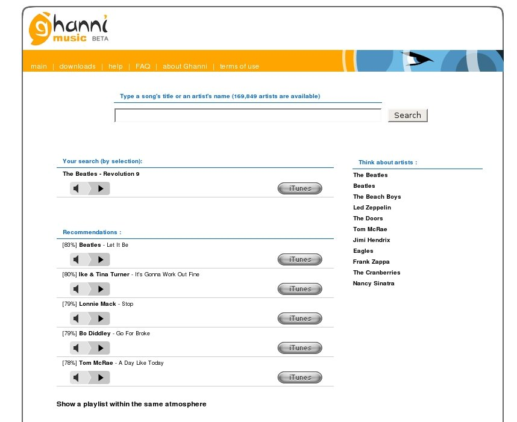

ghanni music
Ghanni music is a content-based music recommender. Type in the name of an artist or a song, and you get recommendations based on music that sounds similar to that song or artist. According to their FAQ, Ghanni uses "advanced pattern recognition and music signal analysis techniques to estimate the similarities between your query and the songs in our database. The similarity is a function of the rhythm, timbre, instrumentation, vocals, and the music surface information we automatically extract from a song."
The web interface to Ghanni, unlike the latest round of social music recommenders, is focused totally on music recommendation. There are no friends, playlists, charts, games, users profiles or any of the seemingly standard features of a Music 2.0 site, just recommendations.

Ghanni actually gives you 3 types of recommendations:
- Song level recommendations - this is something that a content-based site like Ghanni can in theory, do better than a social system,
- Think about artists - these are similar artists
- Playlist within the same atmosphere
The Recommendations
So how are the Ghanni recommendations? I found them to be rather curious. I've worked with enough content-based recommenders to know what to expect. Content-based recommenders will often recommend music by different artists, different genres and era. Content-based recommenders will do things like put Eleanor Rigby closer to a string quartet than to Helter Skelter. Since unlike social recommenders, content-based recommenders don't care about popularity, content-based recommendations will tend to include many more unknown artists than a social recommender.
The curious thing about Ghanni is that their recommendations seemed more like social recommendations than content-based recommendations.
I started with the song 'Hey Jude' by the Beatles. Recommendations received were 'Surfer Girl' by the Beach Boys, 'Dear Prudence' by the Beatles, 'Laughter in the Rain' by Neil Sedaka, 'Tangerine' by Led Zeppelin, and 'Fight for your honor' by Chicago. All classic rock from the same era by very popular artists.
Next up, I tried a song by 'Clap your hands say yeah' called 'Is this Love?'. I received recommendations for songs by Razorlight, Catatonia, Rilo Kiley, Stellstarr, and Bloc Party. All indie artists that have been popular in the last 5 years or so.
Final test - 'Revolution #9' by the Beatles. This song is so unlike any other song by the Beatles, or for that matter any other pop song released during the 60s or 70s. I'd expect recommendations for songs by artists such as Karlheinz Stockhausen and John Cage. Instead, Ghanni gives me more Beatles, Ike and Tina Turner, Bo Diddley, and Tom McRae. Not a single example of Music Concrete. When I ask for a playlist within the same atmosphere, it looks like playlist from the latest classic rock radio station: Beatles, Led Zeppelin, Cream, Eagles, Doors, Ike and Tina.
Update: Oscar points out that if you ask for recommendations related to a French song,
all of the recommendations are French songs. Although very
desirable, this type of recommendation is far beyond the
state-of-the-art for content-based recommendations.
So what is going on here? These don't seemed to be content-based recommendations at all! Are they trying to pull the wool over our eyes? My guess is that the scientists at Ghanni decided to use all data that was available to them to build their similarity models. So in addition to their content-based features related to timbre, pitch and tempo, they are including features that are typically found in a song's metadata. This include the year of release and the genre of the song. This is a perfectly reasonable thing to do, any machine learning scientist will tell you to use all of the data that you can. However, it appears that these features derived from the metadata are overwhelming the content based features. The resulting recommendations lack the 'aha' factor that come with content-based recommenders. There are no surprise linkages across genres. Just rather pedestrian recommendations that you could easily get from the All Music guide.
Ghanni seems to have some smart people
on their team, so we can expect them to improve their recommendations.
But for right now, the recommendations don't seem to be any better
than what you could get from the many other music recommenders that are
out there. Thanks yet again for the tip, Oscar!
Posted by elias on April 10, 2007 at 07:59 AM EDT #
So, it is clear that, at least, they do some filtering/reordering/tweaking after the content-based proposed songs. Or maybe merging two approaches: CB plus editorial metadata. Who knows?
But then, is not a CB recommender but a Hybrid one.
Posted by Oscar on April 10, 2007 at 08:14 AM EDT #